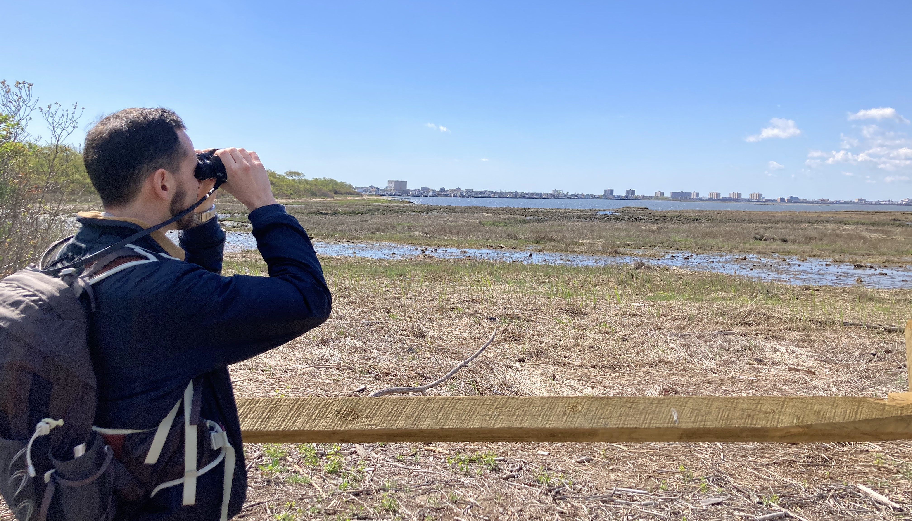
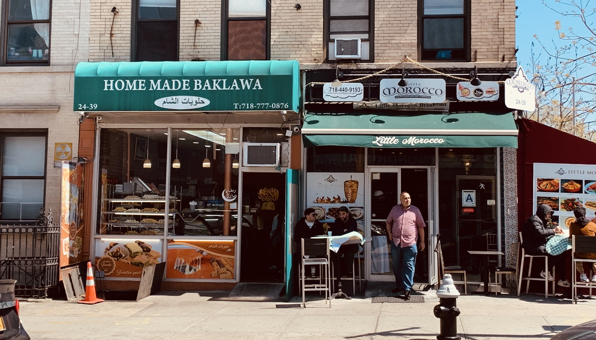

Wild GIS Chase started out of a shared desire to explore how we can utilize online resources to help communicate themes and tell stories with maps, data visualizations, and interactivity. We first collaborated on a virtual tour of New York's Jamaica Wildlife Refuge, a haven for migratory and local birds, in Jane's Squawk! and have since continued to experiment with different media.
This page lists our mapping and data storytelling projects to date.
Jane's Squawk! A (Virtual) Bird Walk Through Queens

Created for Jane's Walk 2023, this virtual walk explores crowdsourced data about the birds of Queens, NY, from long-legged shorebirds to colorful warblers to elegant swallows. We then put our novice birding skills to the test and see what we can find when we venture out ourselves. Follow along here.
Jane's Block: The “Sidewalk Ballet” along Astoria’s Steinway Street

We returned in 2024 with our second virtual Jane's Walk, this time to Steinway Street in Astoria, Queens, a former company town that supported the eponymous Steinway & Sons piano manufacturer in the late nineteenth century. Today, the street is quintessentially New York—warehouses give way to brick rowhouses interspersed with an incredible array of storefronts and people. In the spirit of Jane Jacobs’ contemplation of urban streets, this multimedia tour is an immersive experience of Steinway Street’s Middle Eastern and North African enclaves. Join us.